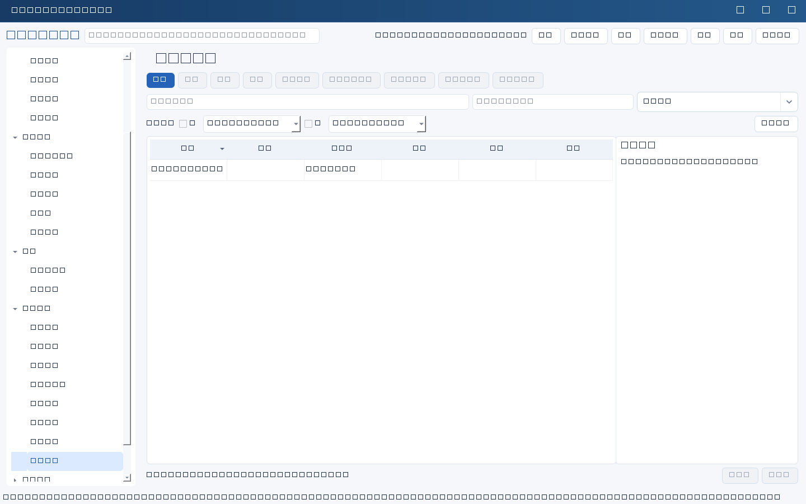
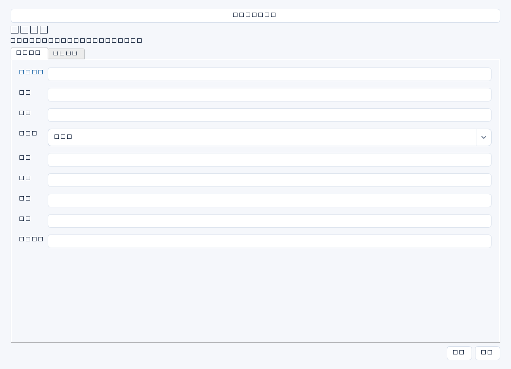

记录IT服务、交付、连续性和费用管理指标的定义、目标、实际与证据，支撑周期复盘。关键是可重复取数和同口径比较，不是仅展示好看的数字。


操作步骤与资料获取
- 从规划、服务承诺或业务痛点选择少量有管理用途的指标，确认由谁使用、用于何种决策。
- 与数据提供方确定范围、周期、分子分母、排除项和单位，取得监控、工单或财务原始数据。
- 填写基线、目标和本期实际，附取数时间、样本量及证据位置；缺数据时如实记录缺口，勿用零代替未知。
- 人工核对跨期口径，解释偏差并形成改进行动；本模块不自动连接监控、计算指标或创建整改任务。
字段逐项说明
| 操作 / 字段 | 详细说明 |
|---|---|
| 名称 | 指标标题，强制非空；建议“核心系统恢复演练达标率”等明确对象。 |
| 周期 | 本次统计期间，如2026年第二季度；自由文本，建议起止时间明确。 |
| 范围 | 包含哪些系统、团队、地点或服务，以及排除范围；保持与基线一致。 |
| 负责人 | 负责取数、核验和解释指标的人名，不是系统自动数据采集账号。 |
| 口径 | 定义计算公式、分子分母、时间边界、样本量和排除规则；文本公式仅用于说明，不自动执行。 |
| 单位 | 如%、小时、次、元/单；自由文本，建议与基线、目标、实际一致。 |
| 基线 | 改善前或约定基准期的值及时间；文本字段，不受非负数值校验，可说明未采集但应留缺口。 |
| 目标 | 经确认的期望值及时间，例如≥95%；文本字段，不自动比较达标。 |
| 实际 | 本周期同口径结果，可写数值及样本说明；文本字段，不自动取数，也不强制只能数字。 |
| 证据 | 原始导出、计算表、查询口径及确认材料的位置、版本和日期；保留可重算依据。 |
| 数据缺口 | 列缺失对象、期间、样本偏差和对结论影响，并写补采安排；不要把缺失数据默认为0。 |


示例（仅演示）
| 操作 / 字段 | 详细说明 |
|---|---|
| 名称 | 核心系统恢复演练达标率 |
| 周期 | 2026年第二季度 |
| 范围 | 本季度计划演练的ERP、仓储、统一认证3套系统 |
| 负责人 | 李明 |
| 口径 | 同时满足批准RTO、RPO和业务核对的系统数÷计划演练系统数×100%；未演练计入分母不计入分子 |
| 单位 | % |
| 基线 | 2025Q4同范围为33.3% |
| 目标 | 100% |
| 实际 | 66.7%（2/3） |
| 证据 | 3份演练记录、统计底表V1；受控资料库/指标/2026Q2；取数2026-06-30 |
| 数据缺口 | 统一认证尚未演练；不是数据为0，需7月补演并另记后续周期结果 |
形成闭环
- 请指标负责人核对原始数据和计算表，说明目标差距与可信度，再用于管理汇报。
- 目标未达成时另建行动任务或决策记录，不将改进计划写成已经实现的实际值。
- 下期沿用同口径；确需变更时保留旧定义和可比性说明。
常见误区与边界
- 基线、目标和实际统计范围不同，却直接声称改善。
- 只留汇总百分比没有分子分母，无法复算。
- 将指标字段误认为数字强制校验字段；这里的基线、目标、实际都是自由文本，准确性依赖人工核验。